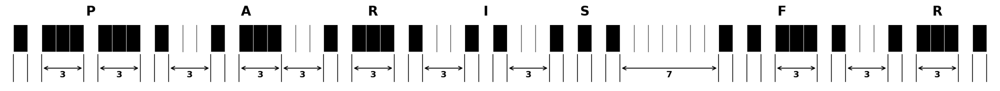
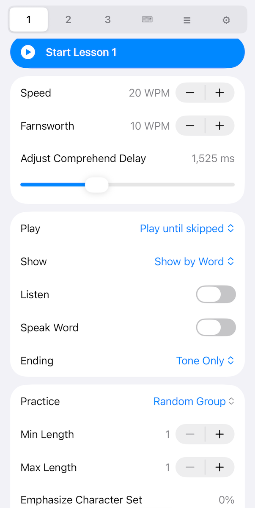
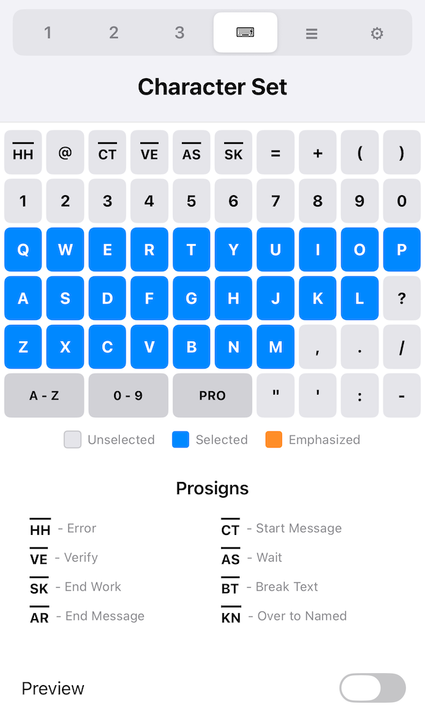
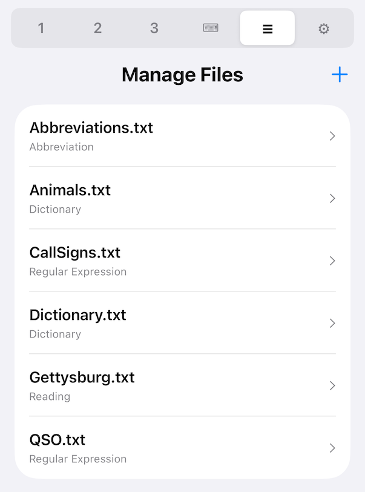
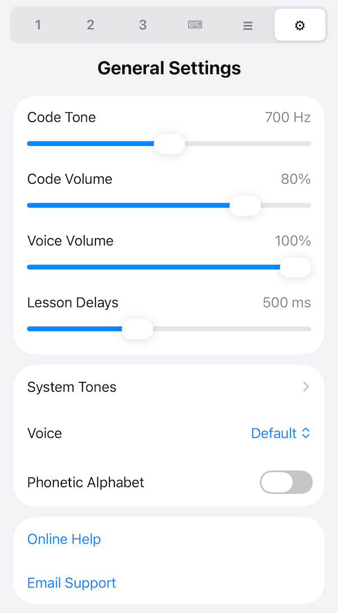

Welcome to Learn Morse Code, an app to help turn code from an oddly rythmatic series of meaningless tones to letters you hear almost like someone spelling words aloud. This is known as Instant Character Recognition And even to hearing whole words, converting Morse code to an audible language. Other apps have you learning by typing on a keyboard. This will make you into a mechanical translator, forced you to read back what you just finished typing in order to comprehend it.
For auditory training, few resources rival the extensive library built by Morse Code Ninja . With thousands of generated training videos on his YouTube channel and the podcasts on his website he's created a fantastic trainign resource. Yet, navigating that sheer volume of material can be a bit overwhelming. And despite that volume, you may not find the exact speed, spacing, or combination of characters, words or phrases you want to practice on.
That is where Learn Morse Code comes in to help. Built for total flexibility, the app lets you customize your training sessions exactly as you need. Allowing any speed or spacing, practicing custom sets of characters, words with those characters, amateur radio call signs and phrases. Best of all, it also offers a truly interactive, hands-free experience: the app plays the code, listens for your spoken answer, and if correct moves right on to the next. If not, it speaks the correct answer and plays the code again. Whether you're commuting, walking the dog, or relaxing at home, you can improve your Instant Character and Word Recognition entirely hands-free.
A little knowledge of morse code structure can be helpful in understanding what you are hearing as well as what the settings for the lessons are doing. But you always want to concentrate on the sound rather than the structure to avoid developing bad habits. Here is an example of the short phrase "PARIS FR"

The basic unit time is the dot time, shown as ticks in the diagram. The word PARIS (50 total dot times including the word space) is used as the formal definiton for the relationship between dot time and WPM (words per minute). Dot time in ms is 1200/WPM. So for 20 WPM the dot time is 60ms. Why 20 WPM? Because that's about as slow of morse code you want to learn at. Any slower and you'll try to break it apart, counting dots and dashes and you'll never achieve instant character recognition.
What can you see in this diagram? First, the length of the characters varies in width. Sometimes even much more so than shown in this diagram. An E is only 4 dot lengths total, 1 for the dot and 3 for the inter letter space. A 0 (zero) is 22 dot lengths in total, but this is about as long as they get. For the most part, the more common characters are shorter, so this helps speed code up. The other thing you may notice is that the tone always starts on an even dot timing and ends on an odd dot timing. This creates an odd rythm structure that only a fan of the band Rush can appreciate.Finally there just isn't much time between the characters. At 20 WPM, there is only 180ms between the last character and the next to comprehend it. Its actually worse than that, since you only realize the character is over once the gap is ended. Since you need to recognize the character instantly, or overlap recognizing with hearing the next characer, you can't be using any mental tricks either verbal or visual to recognize the character. There simply isn't the mental bandwidth to allow for it.
Farnsworth timing is a learning hack to give you more time to process the character. It streches out the time between characters (3 dots) and words (7 dots) to give you time to comprehend the character just sent. It also is expressed in WPM and is always smaller than the character WPM. Don't allow yourself to use this extra time to use mental tricks. If you find yourself falling in this trap, use one of the repeat modes in the app to resend the character and give your brain another crack at it. Remember to increase Farnsworth speed as you learn so you can get to comprehending at full speed.
The following morse code table will be helpful eventually later when learning to send morse code or occasional reference when having trouble. For example, I had trouble hearing the difference between C and Y. That final dot or dash is hard for me to distinguish for some reason. But again concentrate on the sound and not the visual form.
| A | -— | S | --- | |
| B | —--- | T | — | |
| C | —-—- | U | --— | |
| D | —-- | V | ---— | |
| E | - | W | -—— | |
| F | --—- | X | —--— | |
| G | ——- | Y | —-—— | |
| H | ---- | Z | ——-- | |
| I | -- | 0 | ————— | |
| J | -——— | 1 | -———— | |
| K | —-— | 2 | --——— | |
| L | -—-- | 3 | ---—— | |
| M | —— | 4 | ----— | |
| N | —- | 5 | ----- | |
| O | ——— | 6 | —---- | |
| P | -——- | 7 | ——--- | |
| Q | ——-— | 8 | ———-- | |
| R | -—- | 9 | ————- | |
| , | ——--—— | . | -—-—-— | |
| / | —--—- | ? | --——-- |
These 40 characters are by far the most common characters used. The other standard punctuation marks are defined by ITU M.1677 are included in the app but will almost never be heard. What you will hear is a few of the more common prosigns. Prosigns are two letters merged together (no character space) and are shown with a line over the characters or are sometimes shown joined with <>. They serve utility funtions such as <BT> break text, a sort of paragraph separator. Or <HH> a sort of backspace for sending errors, to tell the listener to ignore the last word or so. Other common prosigns are <AR> for end of message and <SK> for end of contact.
The top of the app contains tabs to open lessons 1 to 3, select which characters to practice, manage files and general settings.

The top button starts the lesson as configured below.
The first section sets the character and overall (Farnsworth) speed. Changing either of these updates the Comprehend Delay to be a Farnsworth word space in time. You can tweak this delay to make it faster forcing quicker comprehension as you improve.Then next section controls the lesson format. The formats generally follow the same format that Morse Code Ninja uses. Roughly it plays the morse code, waits for you to comprehend it (or speak the answer), shows the answer, speaks the answer (optionally) and replays the morse code (optionally).
Play Morse
│
├─► If Play 2 or 3 ──► Silent Delay for Farnsworth Word Space*
│ ▼
│ Play Morse again
│
├─► If Play 3 ──► Silent Delay for Farnsworth Word Space*
│ ▼
│ Play Morse again
▼
Silent for Comprehend Delay (or Listen for answer)
▼
Show Answer Visually (if Show at End)
▼
Speak Answer (if Speak Word enabled)
▼
If Replay is enabled ──► Silent Delay for Farnsworth Word Space
│ ▼
│ Play Morse again
▼
If Replay or Tone ──► Silent Delay for Lesson Delay
│ ▼
│ Play Separator Tone
▼
Lesson Delay
▼
Continue to Next Example
For Listen, if the correct answer is supplied, it will skip the remaining steps and go to a Lesson Delay and Continue to the Next Example.
For Play until Skipped, it will only reveal the answer if skip is pressed.
Otherwise unless the right answer is supplied, it will jump back to the top and play the same morse code again.
* - Delay reduced to Farnsworth Character Space for 1 letter groups
The final section selects what morse code will be sent. Random characters, random call signs, QSOs (radio contacts), words from a dictionary are all available. The emphasis control allows you to concentrate on particular characters you need to improve upon. The percentage indicates which percent of groups or words will include at least one emphasized character.

This is where which characters you want to practice are selected. Tapping characters will cycle them from being selected, emphasized and deselected. The A-Z and 0-9 keys quickly select and deselect characters for you quickly. The PRO key changes how 3 of the characters are shown, either as punctuation or prosigns. Use the preview option to hear the characters outside of a lesson.

This allows you to add, delete or modify the files used for practice. Files fall into these groups:

This controls settings across all lessons. Phonetic alphabet will spell words using the NATO phonetic alphabet.
Regular expressions are a concept used by programmers when searching for text. Its been modified here to allow creating random callsigns or phrases. You can edit the existing files or copy and paste specific lines into a new file for training if you don't want to learn the details.
Here is a simple regex for a call sign [KNW][0-9][A-Z]{1,3} Letters or letter ranges inside of [] are choosen randomly. The {1,3} repeats the previous group 1 to 3 times.
Here is a more comples regex example that adds the A prefix (K|N|W|(A[A-L]))[0-9][A-Z]{1,3} The parentheses creates a group to select. The | chooses one or another character(s) or groups.
There is usually more than one way to do the same thing. For example G[MAE] or (GM|GA|GE) or G(M|A|E) all produce the same results.
Its also important to remember a random choice is made at each point a random selection is needed. Either at the | or inside each []. For example (K|N|W|(A[A-L])) will give have about 25% K, N, W and A, with the A followed by a random letter from A to L. But ([KNW]|(A[A-L]) will have 17% K, N, W and 50% starting with A.
An advanced feature is back-referencing. Each top level group () can be repeated with a \1 to \9 where \1 refers to the first group. This can be used for repeating items in a call.
For those familiar with convential regular expressions the following are not supported:
Where is the screen to practice sending? There is none, because none is needed! You can practice simpling by voicing morse code during everyday activites. Walking the dog for example. Its probably best you have at least the letters learned and have developed a bit of an ear for the rythym. Car license plates make good practice for callsigns once you know the numbers.
"Dit" and "Dah" are generally how dots and dashes are verbalized. Dits are generally shortened to "Di" except for the final "Dit" in a character. The important point to make the practice useful is to not simply say the word but use the correct timing when we verbalize them. Two Dits should be as long as one Dah. So for a D Dah-Di-Dit, the Dah needs to be as long as the two Dits. And the same for the U Di-Dit-Dah. It will be obvious after hearing some morse code. Particularly after getting your Farnsworth speed up.
To measure your sending speed simply time how long it takes you to 'send' the word PARIS. Unless you're an auctioneer, you probably will max out around 10 WPM.